ID: dog-train-n02114548_7558/felzenszwalb_masked_softmax
Accuracy: 0.687 -> 0.689
Mean Recall: 0.687 -> 0.689
Mean Precision: 0.692 -> 0.691
Mean F1: 0.684 -> 0.686
Target Recall: 0.427 -> 0.456
Target Precision: 0.706 -> 0.671
Target F1: 0.532 -> 0.543
Orig Pred Recall: 0.549 -> 0.538
Orig Pred Precision: 0.553 -> 0.564
Orig Pred F1: 0.551 -> 0.551
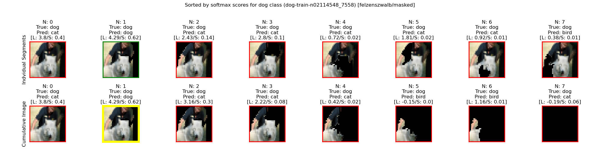 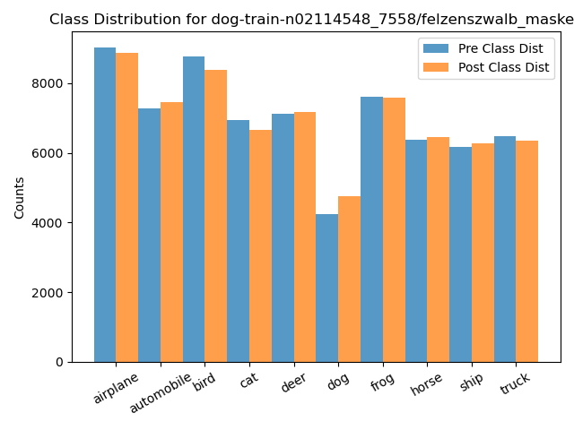
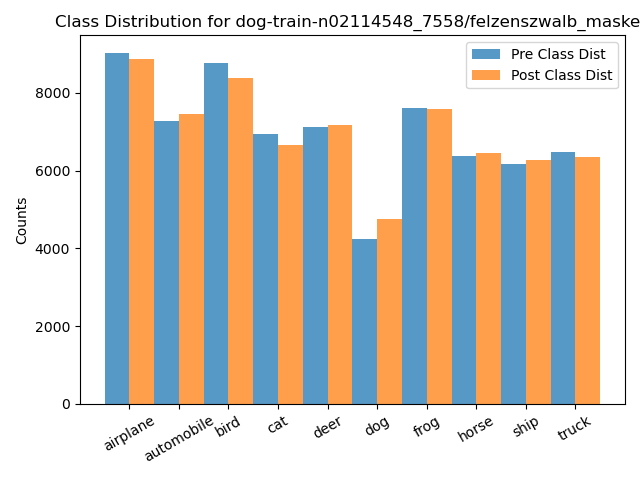
ID: dog-train-n01322508_12502/felzenszwalb_gaussian_softmax
Accuracy: 0.687 -> 0.688
Mean Recall: 0.687 -> 0.688
Mean Precision: 0.692 -> 0.692
Mean F1: 0.684 -> 0.685
Target Recall: 0.427 -> 0.466
Target Precision: 0.706 -> 0.661
Target F1: 0.532 -> 0.546
Orig Pred Recall: 0.61 -> 0.562
Orig Pred Precision: 0.6 -> 0.65
Orig Pred F1: 0.605 -> 0.603


ID: dog-train-n02110806_2781/felzenszwalb_masked_softmax
Accuracy: 0.687 -> 0.688
Mean Recall: 0.687 -> 0.688
Mean Precision: 0.692 -> 0.689
Mean F1: 0.684 -> 0.684
Target Recall: 0.427 -> 0.508
Target Precision: 0.706 -> 0.614
Target F1: 0.532 -> 0.556
Orig Pred Recall: 0.549 -> 0.505
Orig Pred Precision: 0.553 -> 0.583
Orig Pred F1: 0.551 -> 0.542
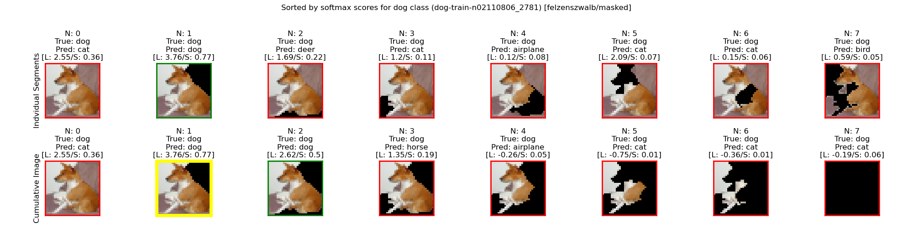 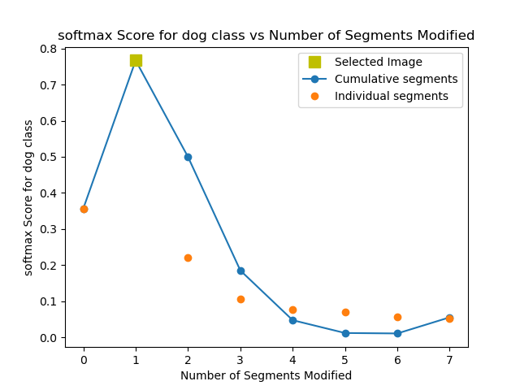 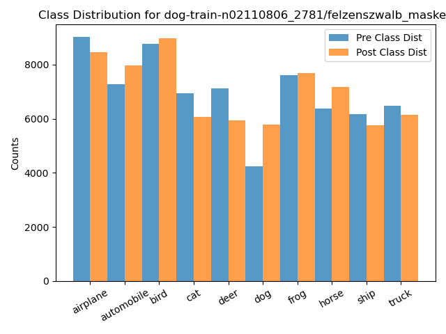ID: dog-train-n02117900_378/felzenszwalb_gaussian_softmax
Accuracy: 0.687 -> 0.688
Mean Recall: 0.687 -> 0.688
Mean Precision: 0.692 -> 0.691
Mean F1: 0.684 -> 0.685
Target Recall: 0.427 -> 0.475
Target Precision: 0.706 -> 0.641
Target F1: 0.532 -> 0.546
Orig Pred Recall: 0.549 -> 0.532
Orig Pred Precision: 0.553 -> 0.554
Orig Pred F1: 0.551 -> 0.543
 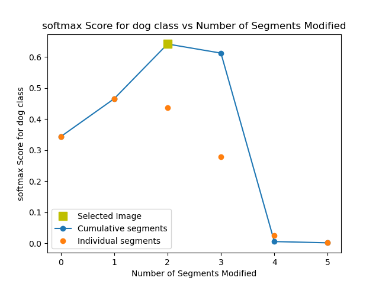
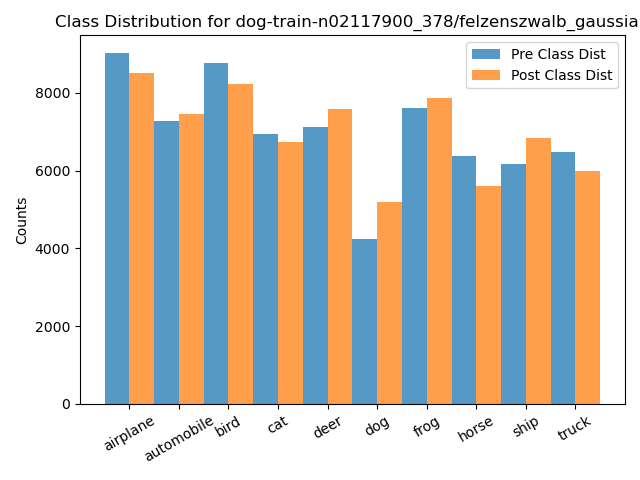
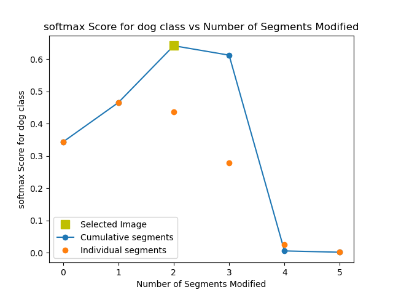
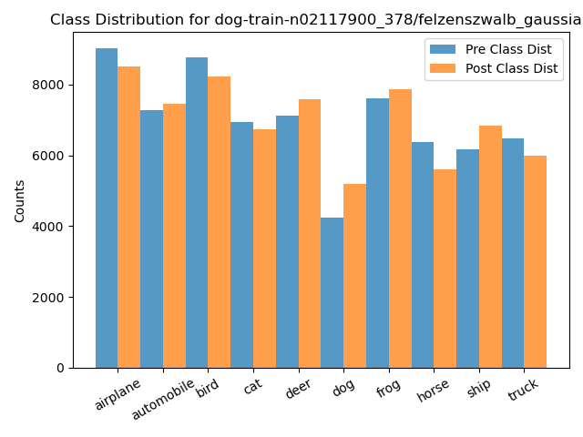
ID: dog-train-n02114367_18628/felzenszwalb_gaussian_softmax
Accuracy: 0.687 -> 0.687
Mean Recall: 0.687 -> 0.687
Mean Precision: 0.692 -> 0.691
Mean F1: 0.684 -> 0.683
Target Recall: 0.427 -> 0.435
Target Precision: 0.706 -> 0.692
Target F1: 0.532 -> 0.534
Orig Pred Recall: 0.549 -> 0.51
Orig Pred Precision: 0.553 -> 0.581
Orig Pred F1: 0.551 -> 0.543


ID: dog-train-n02119789_2524/felzenszwalb_gaussian_softmax
Accuracy: 0.687 -> 0.685
Mean Recall: 0.687 -> 0.685
Mean Precision: 0.692 -> 0.696
Mean F1: 0.684 -> 0.684
Target Recall: 0.427 -> 0.449
Target Precision: 0.706 -> 0.676
Target F1: 0.532 -> 0.539
Orig Pred Recall: 0.61 -> 0.55
Orig Pred Precision: 0.6 -> 0.657
Orig Pred F1: 0.605 -> 0.599

 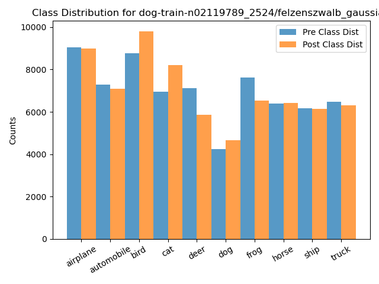
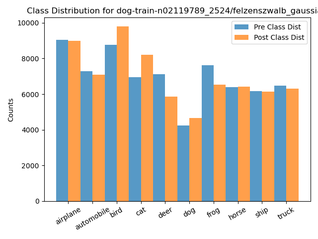
ID: dog-train-n02110341_2396/felzenszwalb_masked_softmax
Accuracy: 0.687 -> 0.685
Mean Recall: 0.687 -> 0.685
Mean Precision: 0.692 -> 0.691
Mean F1: 0.684 -> 0.681
Target Recall: 0.427 -> 0.576
Target Precision: 0.706 -> 0.521
Target F1: 0.532 -> 0.547
Orig Pred Recall: 0.549 -> 0.408
Orig Pred Precision: 0.553 -> 0.678
Orig Pred F1: 0.551 -> 0.509


ID: dog-train-n02114367_18628/felzenszwalb_masked_softmax
Accuracy: 0.687 -> 0.685
Mean Recall: 0.687 -> 0.685
Mean Precision: 0.692 -> 0.691
Mean F1: 0.684 -> 0.681
Target Recall: 0.427 -> 0.447
Target Precision: 0.706 -> 0.685
Target F1: 0.532 -> 0.541
Orig Pred Recall: 0.549 -> 0.503
Orig Pred Precision: 0.553 -> 0.588
Orig Pred F1: 0.551 -> 0.542
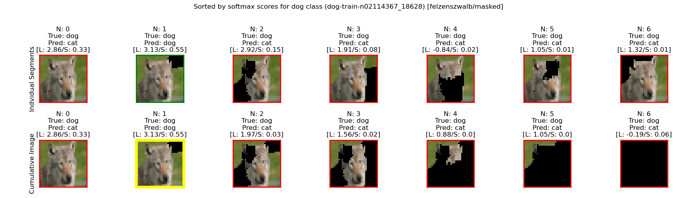

ID: dog-train-n02113186_13534/felzenszwalb_gaussian_softmax
Accuracy: 0.687 -> 0.684
Mean Recall: 0.687 -> 0.684
Mean Precision: 0.692 -> 0.691
Mean F1: 0.684 -> 0.682
Target Recall: 0.427 -> 0.475
Target Precision: 0.706 -> 0.628
Target F1: 0.532 -> 0.541
Orig Pred Recall: 0.734 -> 0.653
Orig Pred Precision: 0.804 -> 0.887
Orig Pred F1: 0.767 -> 0.752

 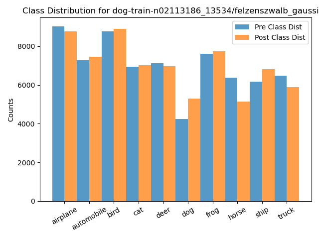
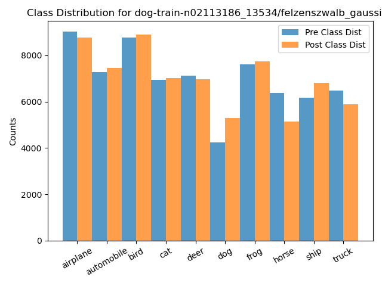
ID: dog-train-n02114548_7558/felzenszwalb_gaussian_softmax
Accuracy: 0.687 -> 0.684
Mean Recall: 0.687 -> 0.684
Mean Precision: 0.692 -> 0.691
Mean F1: 0.684 -> 0.679
Target Recall: 0.427 -> 0.572
Target Precision: 0.706 -> 0.549
Target F1: 0.532 -> 0.56
Orig Pred Recall: 0.549 -> 0.366
Orig Pred Precision: 0.553 -> 0.708
Orig Pred F1: 0.551 -> 0.483
 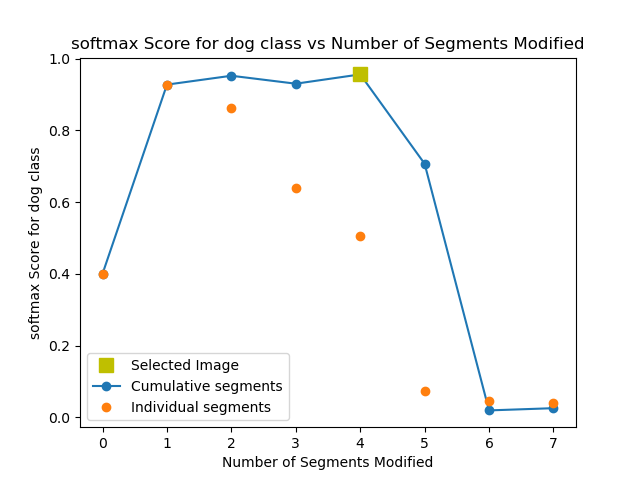
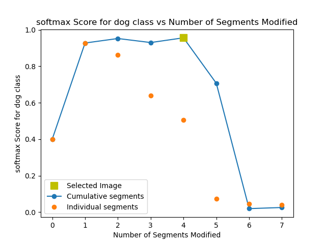

ID: dog-train-n02108089_2250/felzenszwalb_masked_softmax
Accuracy: 0.687 -> 0.683
Mean Recall: 0.687 -> 0.683
Mean Precision: 0.692 -> 0.69
Mean F1: 0.684 -> 0.679
Target Recall: 0.427 -> 0.495
Target Precision: 0.706 -> 0.628
Target F1: 0.532 -> 0.554
Orig Pred Recall: 0.769 -> 0.818
Orig Pred Precision: 0.74 -> 0.686
Orig Pred F1: 0.754 -> 0.746


ID: dog-train-n02112018_292/felzenszwalb_masked_softmax
Accuracy: 0.687 -> 0.682
Mean Recall: 0.687 -> 0.682
Mean Precision: 0.692 -> 0.69
Mean F1: 0.684 -> 0.677
Target Recall: 0.427 -> 0.473
Target Precision: 0.706 -> 0.663
Target F1: 0.532 -> 0.552
Orig Pred Recall: 0.549 -> 0.414
Orig Pred Precision: 0.553 -> 0.681
Orig Pred F1: 0.551 -> 0.515


ID: dog-train-n02117135_2677/felzenszwalb_masked_softmax
Accuracy: 0.687 -> 0.68
Mean Recall: 0.687 -> 0.68
Mean Precision: 0.692 -> 0.695
Mean F1: 0.684 -> 0.676
Target Recall: 0.427 -> 0.468
Target Precision: 0.706 -> 0.647
Target F1: 0.532 -> 0.543
Orig Pred Recall: 0.61 -> 0.411
Orig Pred Precision: 0.6 -> 0.801
Orig Pred F1: 0.605 -> 0.544
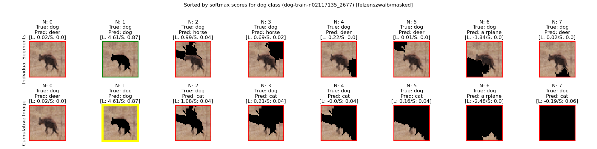

ID: dog-train-n02083346_3775/felzenszwalb_masked_softmax
Accuracy: 0.687 -> 0.68
Mean Recall: 0.687 -> 0.68
Mean Precision: 0.692 -> 0.689
Mean F1: 0.684 -> 0.676
Target Recall: 0.427 -> 0.498
Target Precision: 0.706 -> 0.627
Target F1: 0.532 -> 0.555
Orig Pred Recall: 0.808 -> 0.73
Orig Pred Precision: 0.744 -> 0.844
Orig Pred F1: 0.775 -> 0.783


ID: dog-train-n02108089_2250/felzenszwalb_gaussian_softmax
Accuracy: 0.687 -> 0.68
Mean Recall: 0.687 -> 0.68
Mean Precision: 0.692 -> 0.691
Mean F1: 0.684 -> 0.679
Target Recall: 0.427 -> 0.442
Target Precision: 0.706 -> 0.652
Target F1: 0.532 -> 0.527
Orig Pred Recall: 0.769 -> 0.748
Orig Pred Precision: 0.74 -> 0.757
Orig Pred F1: 0.754 -> 0.752
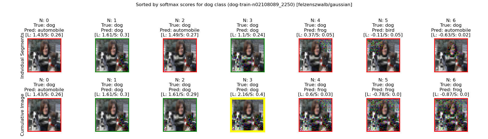

ID: dog-train-n02114367_15682/felzenszwalb_masked_softmax
Accuracy: 0.687 -> 0.679
Mean Recall: 0.687 -> 0.679
Mean Precision: 0.692 -> 0.703
Mean F1: 0.684 -> 0.676
Target Recall: 0.427 -> 0.454
Target Precision: 0.706 -> 0.666
Target F1: 0.532 -> 0.54
Orig Pred Recall: 0.61 -> 0.388
Orig Pred Precision: 0.6 -> 0.824
Orig Pred F1: 0.605 -> 0.527
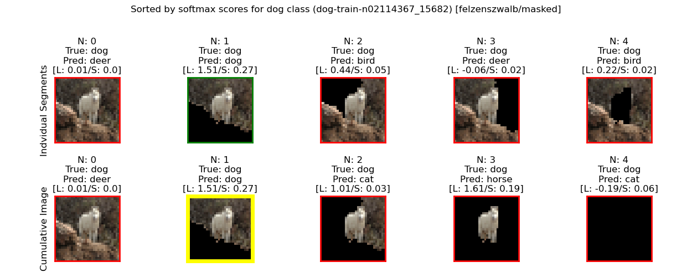 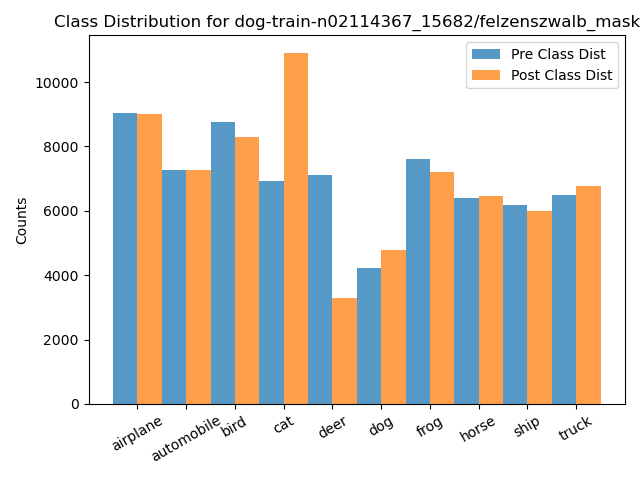
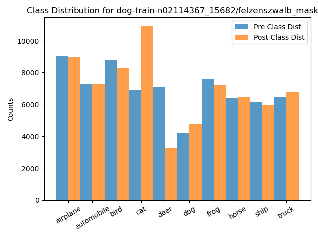
ID: dog-train-n02084861_13239/felzenszwalb_masked_softmax
Accuracy: 0.687 -> 0.675
Mean Recall: 0.687 -> 0.675
Mean Precision: 0.692 -> 0.693
Mean F1: 0.684 -> 0.665
Target Recall: 0.427 -> 0.475
Target Precision: 0.706 -> 0.656
Target F1: 0.532 -> 0.551
Orig Pred Recall: 0.549 -> 0.298
Orig Pred Precision: 0.553 -> 0.807
Orig Pred F1: 0.551 -> 0.435
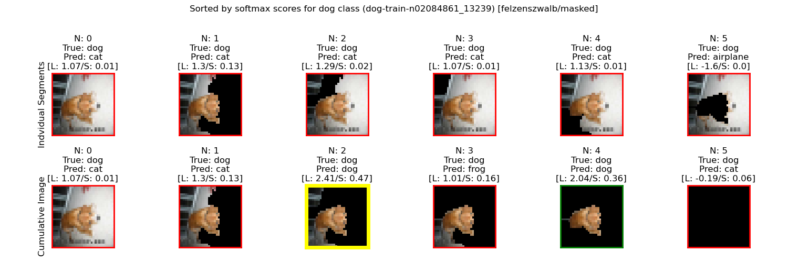 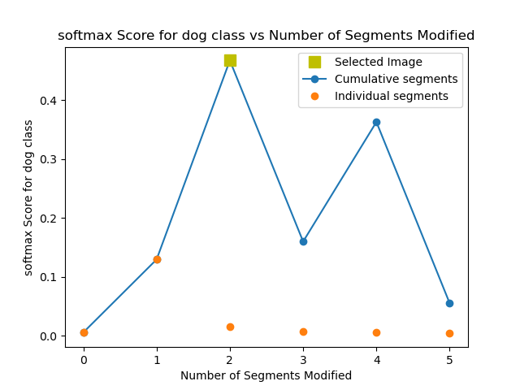 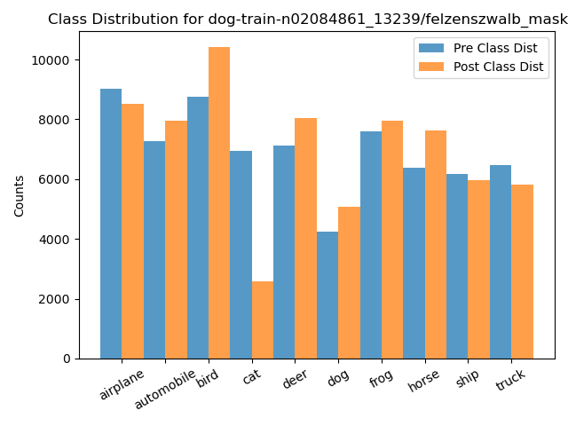ID: dog-train-n02084861_6547/felzenszwalb_masked_softmax
Accuracy: 0.687 -> 0.667
Mean Recall: 0.687 -> 0.667
Mean Precision: 0.692 -> 0.711
Mean F1: 0.684 -> 0.661
Target Recall: 0.427 -> 0.716
Target Precision: 0.706 -> 0.384
Target F1: 0.532 -> 0.5
Orig Pred Recall: 0.549 -> 0.215
Orig Pred Precision: 0.553 -> 0.828
Orig Pred F1: 0.551 -> 0.342
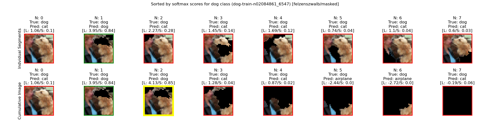 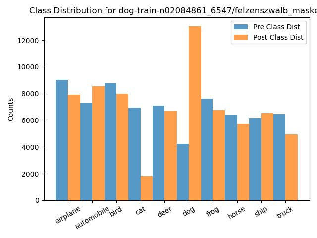
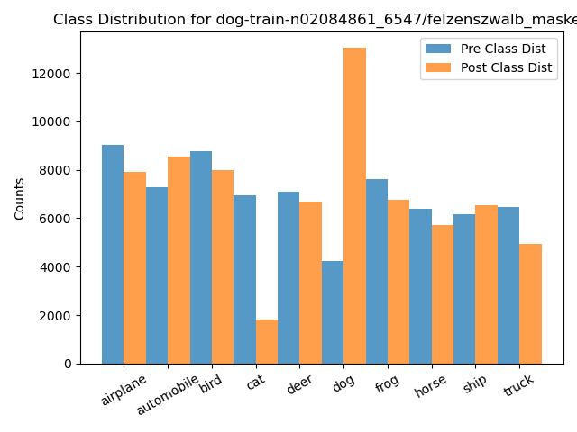
ID: dog-train-n02112826_4815/felzenszwalb_masked_softmax
Accuracy: 0.687 -> 0.652
Mean Recall: 0.687 -> 0.652
Mean Precision: 0.692 -> 0.606
Mean F1: 0.684 -> 0.622
Target Recall: 0.427 -> 0.628
Target Precision: 0.706 -> 0.41
Target F1: 0.532 -> 0.496
Orig Pred Recall: 0.549 -> 0.0
Orig Pred Precision: 0.553 -> 0.0
Orig Pred F1: 0.551 -> 0.0


ID: dog-train-n02114548_3866/felzenszwalb_masked_softmax
Accuracy: 0.687 -> 0.65
Mean Recall: 0.687 -> 0.65
Mean Precision: 0.692 -> 0.656
Mean F1: 0.684 -> 0.623
Target Recall: 0.427 -> 0.674
Target Precision: 0.706 -> 0.377
Target F1: 0.532 -> 0.484
Orig Pred Recall: 0.549 -> 0.003
Orig Pred Precision: 0.553 -> 0.418
Orig Pred F1: 0.551 -> 0.007


ID: dog-train-n02104523_6545/felzenszwalb_masked_softmax
Accuracy: 0.687 -> 0.645
Mean Recall: 0.687 -> 0.645
Mean Precision: 0.692 -> 0.629
Mean F1: 0.684 -> 0.617
Target Recall: 0.427 -> 0.576
Target Precision: 0.706 -> 0.452
Target F1: 0.532 -> 0.507
Orig Pred Recall: 0.549 -> 0.0
Orig Pred Precision: 0.553 -> 0.231
Orig Pred F1: 0.551 -> 0.001

 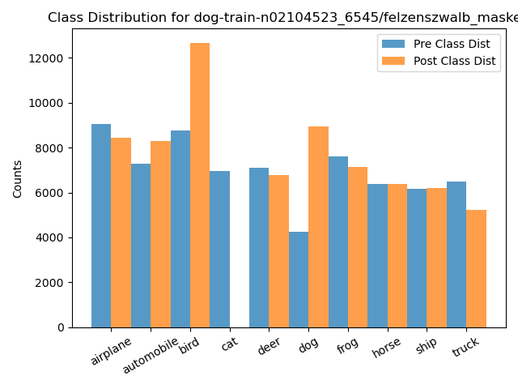
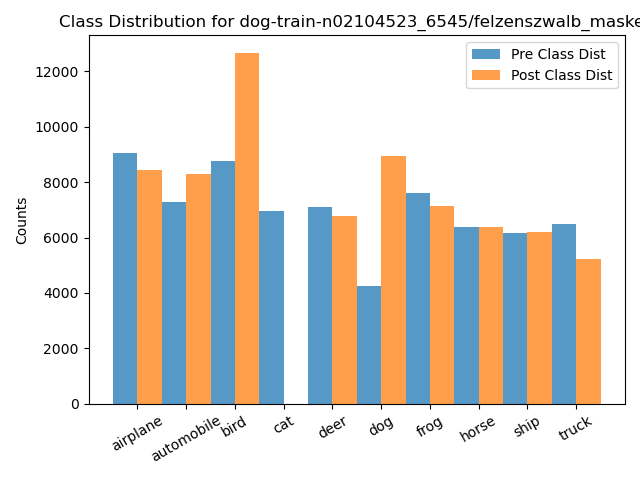
ID: dog-train-n02112018_6624/felzenszwalb_masked_softmax
Accuracy: 0.687 -> 0.645
Mean Recall: 0.687 -> 0.645
Mean Precision: 0.692 -> 0.606
Mean F1: 0.684 -> 0.615
Target Recall: 0.427 -> 0.553
Target Precision: 0.706 -> 0.49
Target F1: 0.532 -> 0.52
Orig Pred Recall: 0.549 -> 0.0
Orig Pred Precision: 0.553 -> 0.0
Orig Pred F1: 0.551 -> 0.0


ID: dog-train-n01322508_12502/felzenszwalb_masked_softmax
Accuracy: 0.687 -> 0.639
Mean Recall: 0.687 -> 0.639
Mean Precision: 0.692 -> 0.606
Mean F1: 0.684 -> 0.614
Target Recall: 0.427 -> 0.625
Target Precision: 0.706 -> 0.355
Target F1: 0.532 -> 0.453
Orig Pred Recall: 0.61 -> 0.0
Orig Pred Precision: 0.6 -> 0.0
Orig Pred F1: 0.605 -> 0.0
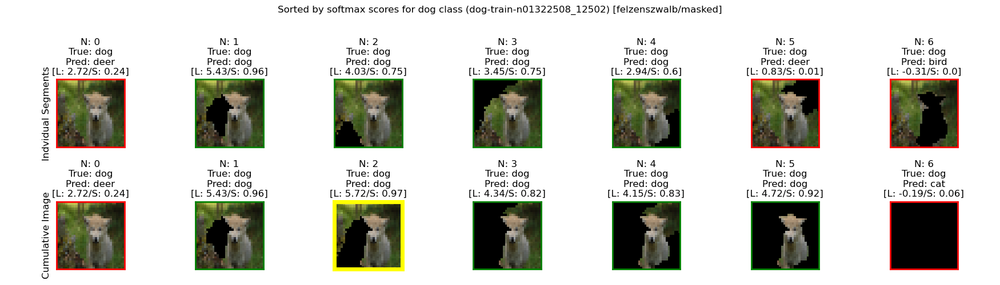

ID: dog-train-n02108089_931/felzenszwalb_masked_softmax
Accuracy: 0.687 -> 0.635
Mean Recall: 0.687 -> 0.635
Mean Precision: 0.692 -> 0.681
Mean F1: 0.684 -> 0.622
Target Recall: 0.427 -> 0.581
Target Precision: 0.706 -> 0.35
Target F1: 0.532 -> 0.437
Orig Pred Recall: 0.734 -> 0.137
Orig Pred Precision: 0.804 -> 0.952
Orig Pred F1: 0.767 -> 0.24


ID: dog-train-n02114100_6249/felzenszwalb_masked_softmax
Accuracy: 0.687 -> 0.617
Mean Recall: 0.687 -> 0.617
Mean Precision: 0.692 -> 0.587
Mean F1: 0.684 -> 0.591
Target Recall: 0.427 -> 0.452
Target Precision: 0.706 -> 0.655
Target F1: 0.532 -> 0.535
Orig Pred Recall: 0.808 -> 0.0
Orig Pred Precision: 0.744 -> 0.0
Orig Pred F1: 0.775 -> 0.0
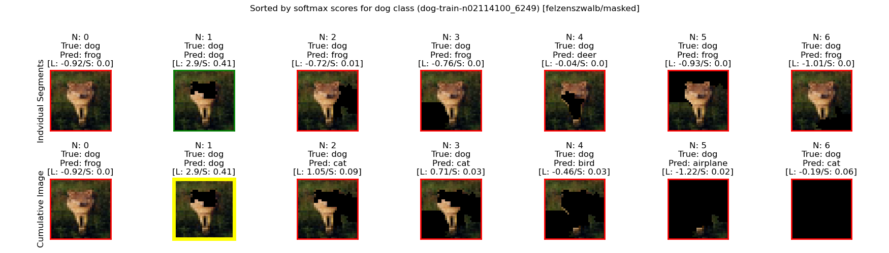

ID: dog-train-n02084732_5331/felzenszwalb_masked_softmax
Accuracy: 0.687 -> 0.616
Mean Recall: 0.687 -> 0.615
Mean Precision: 0.692 -> 0.688
Mean F1: 0.684 -> 0.593
Target Recall: 0.427 -> 0.708
Target Precision: 0.706 -> 0.302
Target F1: 0.532 -> 0.424
Orig Pred Recall: 0.549 -> 0.376
Orig Pred Precision: 0.553 -> 0.686
Orig Pred F1: 0.551 -> 0.486

 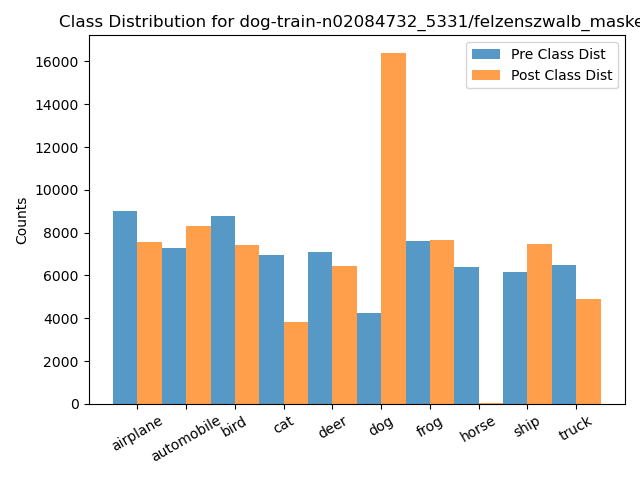
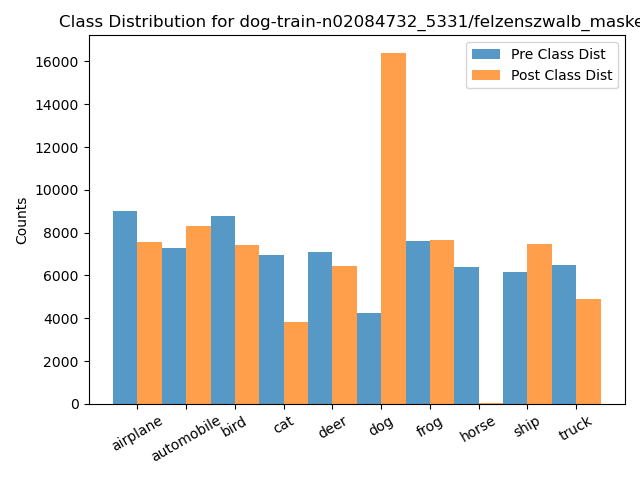
ID: dog-train-n01322508_4536/felzenszwalb_masked_softmax
Accuracy: 0.687 -> 0.476
Mean Recall: 0.687 -> 0.476
Mean Precision: 0.692 -> 0.556
Mean F1: 0.684 -> 0.454
Target Recall: 0.427 -> 0.921
Target Precision: 0.706 -> 0.175
Target F1: 0.532 -> 0.294
Orig Pred Recall: 0.734 -> 0.0
Orig Pred Precision: 0.804 -> 0.0
Orig Pred F1: 0.767 -> 0.0
 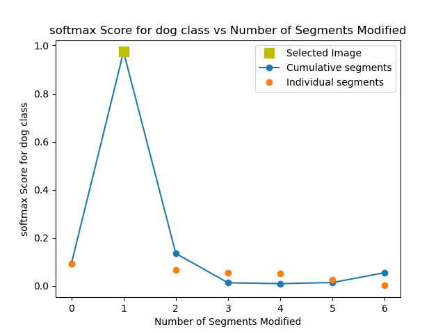
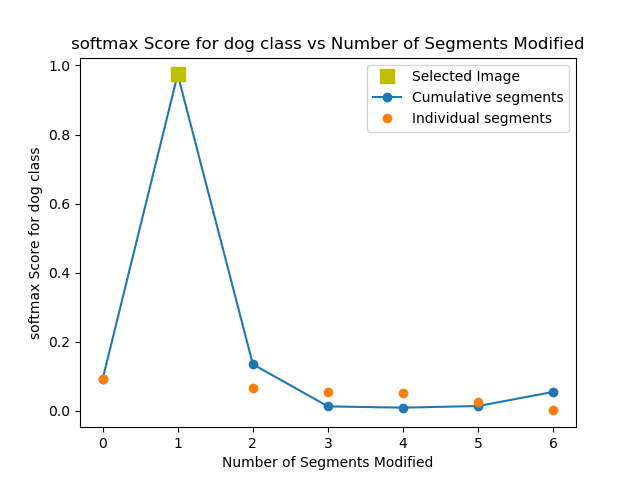